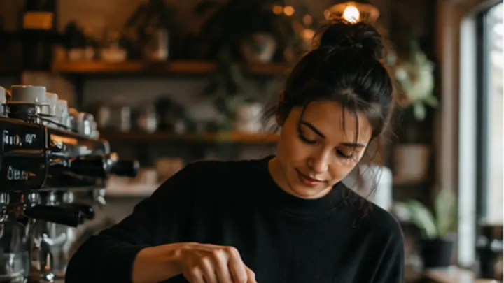
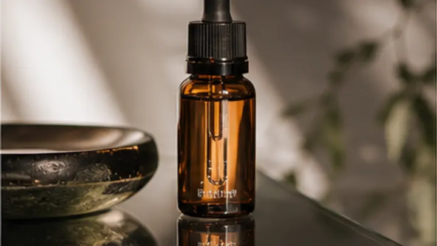
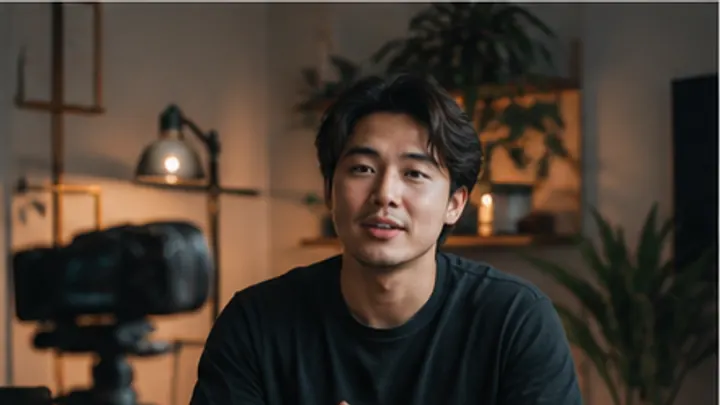

free starterCoffee shop reel
Place, person, product, payoff.
A beginner chooses a real job, then gets shots and prompts instead of a blank text box.

Place, person, product, payoff.

Lock the object before motion.

Face, hands, result, CTA.
warm cafe interior, espresso pour close-up, soft window light, stable subject, 5 seconds
copy all